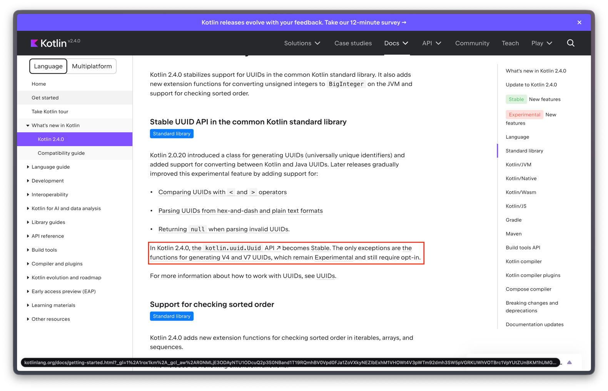

Kotlin · 2026-06-07 · 1분 읽기
UUID - v7 이 무엇일까?
- › UUID v7 알아보기
- › 먼저, UUID와 버전 이야기
- › UUIDv7의 비트 구조
- › 왜 "정렬 가능"이 그렇게 중요한가 — 데이터베이스 인덱스
- › Kotlin 표준 라이브러리 구현 뜯어보기
- › 1) 상위 64비트를 하나의 Long에 묶는다
- › 2) CAS 루프로 락 없이 단조 증가 보장
- › 3) 같은 ms 안에서의 순서 — 12비트 카운터
- › 4) 카운터 오버플로 — 1ms 빌려오기
- › 5) 시계가 뒤로 가도 안전하다
- › 6) 하위 64비트 — variant와 rand_b
- › 장점
- › 단점과 주의점
- › 언제 쓰면 좋은가
- › Kotlin에서 쓰는 법
- › 마무리
- 데이터베이스에 저장하는 고유 식별키(PK) 에서 어떤 값들을 사용하는지 알아보다가, 오토 인크리먼트, 시퀀스, UUID, snowflake 알게 되었다. java 환경에는 아직 공식적으로 여러 UUID 등을 지원하지 않는 것 같은데, 코틀린 2.0.20 부터 표준 라이브러리에 Uuid 가 도입됏음.
마침 프로젝트에서 써볼까 하고 kotlin 2.3.21 에서 v7 써보려고 했는데, 실험적인 기능이어서 @OptIn(kotlin.uuid.ExperimentalUuidApi::class) 를 붙여 컴파일 경고를 피해야했다.
매번 UUID 라이브러리 만들거나, 검증되지 않은 누군가 만들어놓은거 가져오기가 조금 그랬음.. (표준적으로 제공 안되니..? ㄸㄹ.ㄹ..)
kotlin 2.3.0 부터는 v4, v7 에 대해 공식 생성 메서드를 제공! 근데 아직 실험적이더라.. 아! Uuid.random() 은 참고로 v4 를 생성하기 때문에 이거 쓰면됩니다.(이름이 v4인게 명확하긴 하지만..)
근데 마침 오늘 아침에 코틀린 2.4.0 공식 release 발표를 보게됐고, 항목에 Uuid 표준라이브 러리 안정화! 보고 들어가보게 됐음.
https://blog.jetbrains.com/kotlin/2026/06/kotlin-2-4-0-released/
Standard library: Stabilized support for the UUID API and support for checking sorted order.

아직 v4, v7 생성 메서드에 대한 안정화는 도지 않았나보다.
UUID v7 알아보기
UUIDv7, 원리부터 장단점까지 — 그리고 Kotlin 2.3 표준 라이브러리 구현 뜯어보기
Kotlin 2.3.0부터 표준 라이브러리가 Uuid.generateV4()와 Uuid.generateV7()를 제공한다. 별도 라이브러리(uuid-creator, kotlinx-uuid 등) 없이,
멀티플랫폼에서 동일한 API로 v7 UUID를 만들 수 있게 됐다. (단, UUID API는 아직 Experimental이라 @OptIn(ExperimentalUuidApi::class)가 필요하다.)
그런데 v7이 정확히 뭐고, 왜 v4 대신 굳이 v7을 쓰는 흐름이 생겼을까? 원리부터 장단점, 그리고 Kotlin 표준 라이브러리가 이걸 어떻게 구현했는지까지 정리해 본다.
먼저, UUID와 버전 이야기
UUID는 128비트(16바이트) 식별자다. 중앙 조정자 없이 어디서든 독립적으로 만들어도 충돌 확률이 극히 낮다는 게 핵심 장점이다. 형식은 RFC 9562(2024년에 기존 RFC 4122를 대체)에 정의돼 있고, 버전 비트로 생성 방식을 구분한다.
- v1: 타임스탬프 + MAC 주소 기반. 시간순이긴 하지만 MAC 주소가 노출되고, 바이트 배치가 시간순 정렬에 적합하지 않다.
- v4: 거의 전부 랜덤(122비트). 가장 널리 쓰이지만 정렬 불가능하다. 만든 순서와 값의 대소 관계가 무관하다.
- v7: Unix epoch 밀리초 타임스탬프를 맨 앞에 두고, 나머지를 랜덤으로 채운다. 시간순으로 정렬 가능하면서 v4 수준의 유일성을 유지한다.
v7의 등장 배경을 한 문장으로 요약하면 이렇다. "v4의 분산 생성·유일성은 그대로 가져가되, 정렬 불가능 때문에 생기는 데이터베이스 인덱스 문제를 해결하자."
UUIDv7의 비트 구조
128비트가 어떻게 나뉘는지가 v7의 전부라고 해도 과언이 아니다.
0 1 2 3
0 1 2 3 4 5 6 7 8 9 0 1 2 3 4 5 6 7 8 9 0 1 2 3 4 5 6 7 8 9 0 1
+---------------------------------------------------------------+
| unix_ts_ms | 48비트 타임스탬프(상위)
+-------------------------------+-------+-----------------------+
| unix_ts_ms | ver | rand_a | ver=4비트(0111), rand_a=12비트
+---+---------------------------+-------+-----------------------+
|var| rand_b | var=2비트(10), rand_b=62비트
+---+-----------------------------------------------------------+
| rand_b |
+---------------------------------------------------------------+
정리하면:
| 필드 | 비트 | 내용 |
|---|---|---|
unix_ts_ms | 48 | Unix epoch 기준 밀리초 타임스탬프 (빅엔디안) |
ver | 4 | 버전. v7이면 0111 |
rand_a | 12 | 랜덤. 또는 같은 ms 내 순서 보장용 카운터로 활용 |
var | 2 | variant. 항상 10 |
rand_b | 62 | 랜덤 |
핵심은 타임스탬프가 맨 앞 48비트에 온다는 점이다. UUID를 문자열이나 바이트로 정렬하면 곧 생성 시각순 정렬이 된다. 이걸 "k-sortable(거의 정렬된)"이라고 부른다.
왜 "정렬 가능"이 그렇게 중요한가 — 데이터베이스 인덱스
v7의 모든 장점은 사실상 이 한 가지에서 파생된다. 데이터베이스의 기본 인덱스(B-Tree/B+Tree)와 클러스터형 인덱스(예: MySQL InnoDB의 PK)를 떠올려 보자.
- v4(랜덤) PK: 새 레코드가 인덱스의 아무 데나 꽂힌다. 중간 페이지에 끼워 넣어야 하니 페이지 분할(page split)과 단편화가 잦고, 캐시에 없는 페이지를 계속 디스크에서 읽어 와야 한다. 데이터가 커질수록 INSERT가 느려진다.
- v7(시간순) PK: 새 값이 항상 인덱스의 오른쪽 끝 근처에 붙는다. 순차 삽입에 가까우니 페이지 분할이 적고, 최근 페이지가 캐시에 머무를 확률이 높다. 대량 INSERT 성능과 인덱스 밀도가 좋아진다.
즉 v7은 "auto-increment 정수 PK의 인덱스 친화성"과 "UUID의 분산 생성·유일성"을 절충한 물건이다.
Kotlin 표준 라이브러리 구현 뜯어보기
이제 실제 UuidV7Generator.generate(clock) 코드를 보자. 단순히 "타임스탬프 + 랜덤"을 붙이는 게 아니라, 같은 밀리초 안에서도 순서를 보장하기 위해 꽤 영리한 장치가 들어
있다.
fun generate(clock: Clock): Uuid {
// rand_b(62비트)와 카운터 시드로 쓸 랜덤 10바이트
val randomBytes = ByteArray(10).also { secureRandomBytes(it) }
// 12비트 rand_a 중 최상위 1비트는 비워 두고(0x07 마스크 → 11비트),
// 그 자리에 카운터 시드를 넣은 뒤 버전 비트(0111)를 합친다.
val newCounter = randomBytes[8].toInt().and(0x07).shl(8)
.or(randomBytes[9].toInt().and(0xFF))
.or(VERSION_MASK)
var newTimeStampAndCounter: Long
while (true) {
val previousTimeStampAndCounter = timestampAndCounter.load()
val currentTimeMillis = clock.now().toEpochMilliseconds()
val previousTimeMillis = previousTimeStampAndCounter.ushr(TIMESTAMP_BIAS_BITS)
if (previousTimeMillis < currentTimeMillis) { // 시계가 흘렀다
newTimeStampAndCounter =
currentTimeMillis.shl(TIMESTAMP_BIAS_BITS).or(newCounter.toLong())
if (timestampAndCounter.compareAndSet(previousTimeStampAndCounter, newTimeStampAndCounter)) break
} else { // 같은 ms이거나 시계가 뒤로 갔다
newTimeStampAndCounter = previousTimeStampAndCounter + 1 // 카운터 증가
if (newTimeStampAndCounter.and(OVERFLOW_MASK) != 0L) { // 카운터 오버플로
// 타임스탬프 +1ms 하고 카운터 재시드
newTimeStampAndCounter =
(previousTimeMillis + 1L).shl(TIMESTAMP_BIAS_BITS).or(newCounter.toLong())
}
if (timestampAndCounter.compareAndSet(previousTimeStampAndCounter, newTimeStampAndCounter)) break
}
}
// variant(10) 세팅 후 rand_b 완성
randomBytes[0] = randomBytes[0].and(0x3F).or(0x80.toByte())
val variantAndRandB = randomBytes.getLongAt(0)
return Uuid.fromLongs(newTimeStampAndCounter, variantAndRandB)
}
1) 상위 64비트를 하나의 Long에 묶는다
timestampAndCounter는 AtomicLong이다. 여기엔 UUID의 상위 64비트, 즉 [48비트 타임스탬프][4비트 버전][12비트 rand_a/카운터]가 통째로 들어간다.
TIMESTAMP_BIAS_BITS는 16이다(타임스탬프 아래에 버전 4 + rand_a 12 = 16비트가 있으므로). 그래서 currentTimeMillis.shl(16)이 타임스탬프를 상위 48비트로
올리고, 하위 16비트에 버전·카운터가 들어간다.
2) CAS 루프로 락 없이 단조 증가 보장
while(true) + compareAndSet은 전형적인 무잠금(lock-free) CAS 루프다. 여러 스레드가 동시에 호출해도, "이전 값이 그대로면 새 값으로 바꾼다"를 성공할 때까지
재시도하므로 락 없이 thread-safe하다. 그 결과 한 프로세스 안에서 생성된 UUID는 호출 순서대로 엄격히 증가한다.
3) 같은 ms 안에서의 순서 — 12비트 카운터
시계가 아직 다음 밀리초로 넘어가지 않았다면(else 분기) 타임스탬프를 그대로 두고 +1만 한다. 이 +1이 곧 rand_a(12비트) 자리의 카운터 증가다. 그래서 같은 밀리초에 만들어진
UUID들도 만든 순서대로 정렬된다. RFC 9562 §6.2의 "Fixed Bit-Length Dedicated Counter" 방식이다.
여기서 카운터 시드를 12비트가 아니라 11비트만 채운 점(and(0x07) → bits 010)이 중요하다. 12비트 rand_a의 시작값을 항상 하위 절반(0x0000x7FF)에 두는 것인데,
덕분에 어떤 랜덤 시드가 나와도 그 밀리초 안에서 최소 2048번(최대 4096번)은 카운터를 올릴 여유가 생긴다. 원문 주석의 'moderate optimism'이 이 얘기다.
4) 카운터 오버플로 — 1ms 빌려오기
상수를 보면 이 설계가 어떻게 맞물리는지 드러난다.
private const val TIMESTAMP_BIAS_BITS = 16 // 타임스탬프 아래 ver(4)+rand_a(12)
private const val VERSION_MASK = 0x7000 // ver=0111을 bits 12~15에 박음
private const val OVERFLOW_MASK = 0x8000L // 카운터 최상위 비트가 1이면 오버플로
버전을 0x7000으로 세팅하면 상위 64비트의 하위 16비트는 [0111(ver)][12비트 rand_a] 형태가 되고, 이때 bit 15는 0이다. 카운터를 +1 하다 보면 [ver|rand_a]가
하나의 수처럼 올라가는데, rand_a가 0xFFF를 다 채운 다음 한 번 더 증가하면 값이 0x7FFF → 0x8000이 되며 bit 15가 1로 바뀐다. 즉 "rand_a 12비트가 꽉 찼다"
와 "버전 자리가 망가지기 직전"이 정확히 같은 사건이고, 이를 and(OVERFLOW_MASK) != 0 한 번으로 잡아낸다. (그래서 카운터의 유효 범위가 딱 12비트, 한 ms당 4096개다.)
오버플로가 잡히면 타임스탬프를 1ms 앞당기고 카운터를 재시드한다. 미래의 1ms를 미리 당겨 쓰는 셈이라, 한 밀리초에 4096개를 초과해 발급해도 단조성이 깨지지 않는다. 대신 이런 폭주 상황에선 타임스탬프가 실제 시각보다 살짝 앞설 수 있다.
5) 시계가 뒤로 가도 안전하다
NTP 보정 등으로 시계가 거꾸로 가면 currentTimeMillis < previousTimeMillis가 되어 else 분기로 빠진다. 여기서는 이전 값에서 +1만 하므로, 새 값이 절대 이전 값보다
작아지지 않는다. 시계가 뒤로 가도 UUID는 계속 증가한다.
6) 하위 64비트 — variant와 rand_b
마지막으로 randomBytes[0]의 최상위 2비트를 지우고 0b10으로 세팅해 variant를 박은 뒤, 8바이트(62비트 rand_b + 2비트 variant)를 하위 64비트로 쓴다.
Uuid.fromLongs(상위, 하위)로 128비트를 완성한다.
장점
- 데이터베이스 인덱스 친화적: 시간순 삽입 → 페이지 분할/단편화 감소, 캐시 적중률 상승, 대량 INSERT 성능 향상. 특히 클러스터형 인덱스 PK에서 v4 대비 차이가 크다.
- 분산 생성 + 유일성: auto-increment처럼 중앙 조정이 필요 없다. 여러 서버·서비스가 독립적으로 발급해도 충돌 확률이 사실상 없다.
- 시간 정보 내장: 별도
created_at없이도 ms 단위 생성 시각을 대략 알 수 있고, 시간 범위 조회·정렬에 유리하다. - v1의 단점 제거: MAC 주소를 노출하지 않고, Unix epoch ms라는 단순한 시간 표현을 쓴다.
- 표준 + 광범위한 지원: RFC 9562 표준이며, 이제 Kotlin 표준 라이브러리를 비롯해 여러 언어·DB가 기본 지원한다.
단점과 주의점
- 생성 시각이 노출된다: 앞 48비트가 곧 타임스탬프다. UUID만 봐도 "이 레코드가 언제 만들어졌는지" 추정할 수 있다. 가입 시각, 주문 시각 등을 숨겨야 하는 곳엔 부적합하다. 외부 노출 식별자로 쓸 땐 정보 누출을 반드시 고려해야 한다.
- 예측 가능성이 v4보다 높다: 랜덤 비트가 v4(122비트)보다 적고(rand_b 62비트 + rand_a 일부), 앞부분은 시간이라 추측 가능하다. 추측 불가능성이 보안 요건인 토큰 용도로는 v4가 낫다.
- 단조성 보장 범위가 좁다: Kotlin 구현의 엄격한 단조 증가는 한 프로세스(애플리케이션 생명주기) 안에서만 보장된다. 서로 다른 프로세스·호스트에서 같은 ms에 만든 UUID 사이의 순서는 보장되지 않으며, 호스트 간 시계 오차가 있으면 전역 정렬은 어긋날 수 있다.
- 저장 비용: 16바이트로, 4~8바이트짜리 정수 PK보다 인덱스·메모리를 더 먹는다. 최고 성능이 필요한 곳에선 여전히 bigint auto-increment가 유리할 수 있다.
- 문자열 표현이 길다: 36자(하이픈 포함). URL·로그에서 길고, 더 짧은 식별자가 필요하면 별도 인코딩을 고려해야 한다.
- ms 단위 한계: 같은 ms에 한 프로세스가 4096개를 넘기면 미래 ms를 당겨 쓴다. 극단적 발급률에선 타임스탬프가 실제 시각보다 조금 앞설 수 있다.
- 시스템 클록 의존: 구현이 역행을 잘 막아 주긴 하지만, 근본적으로 시계에 의존하는 식별자라는 점은 인지하고 있어야 한다.
언제 쓰면 좋은가
- 데이터베이스 PK로 UUID를 쓰고 싶을 때: v4 PK의 인덱스 성능 문제를 겪고 있다면 v7이 직접적인 해법이다.
- 분산 환경에서 시간순 정렬이 필요한 식별자: 이벤트 로그, 메시지 ID, 주문 번호 등.
- 반대로 추측 불가능성·시각 비노출이 중요한 외부 토큰이라면 v4(또는 별도 불투명 토큰)를 쓰는 게 맞다.
참고로 v7과 비슷한 시간정렬 식별자로 ULID가 있는데, v7은 그 아이디어를 RFC로 표준화한 버전이라고 보면 된다. 표준·호환성 측면에서 새 프로젝트라면 v7이 무난하다.
Kotlin에서 쓰는 법
import kotlin.uuid.Uuid
import kotlin.uuid.ExperimentalUuidApi
@OptIn(ExperimentalUuidApi::class)
fun main() {
val a = Uuid.generateV7()
val b = Uuid.generateV7()
val c = Uuid.generateV7()
println(a < b) // true
println(b < c) // true — 같은 ms여도 카운터 덕분에 순서 보장
}
특정 시각의 v7이 필요하면 Uuid.generateV7NonMonotonicAt(instant)를 쓸 수 있다(이름 그대로 단조성은 보장하지 않는다). 랜덤 부분은 플랫폼의 CSPRNG로 만들어지며, 시스템
엔트로피가 부족하면 잠깐 블로킹될 수 있다는 점도 알아 두면 좋다. (Kotlin/Wasm-WASI 타깃의 난수는 암호학적 안전성이 보장되지 않으니 주의.)
마무리
UUIDv7은 "랜덤 UUID의 장점은 유지하되, 정렬 불가능 때문에 생기던 DB 인덱스 문제를 타임스탬프 prefix로 푼다"는 한 문장으로 정리된다. Kotlin 2.3 표준 구현은 여기에 더해 12비트 카운터 + 무잠금 CAS 루프로 한 프로세스 내 엄격한 순서까지 보장한다. 다만 생성 시각이 노출되고 v4보다 예측 가능성이 높다는 트레이드오프가 있으니, "내부 PK·정렬용이면 v7, 외부 비밀 토큰이면 v4"라는 기준으로 골라 쓰면 된다.
'Kotlin ' 카테고리의 다른 글
- 이 카테고리에 다른 글이 없습니다.